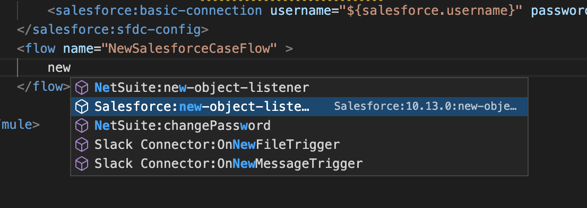
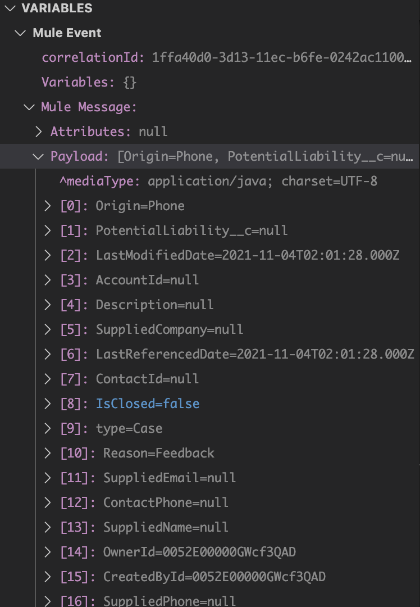

In this section you will leverage the power of Anypoint Code builder to create a full integration project.
What you'll build
In this codelab we will be covering the creation of a full integration project by connecting Salesforce, slack and email.
The high-level steps we will follow are:
- Authentication to Anypoint Platform
- Configure a connector to Salesforce, email, slack
- Configure salesforce event (case) as trigger
- Configure a choice based on case status
- If escalated, send email
- Otherwise, send to slack
- Debug a Mule Application
- Run a Mule Application
- Deploy to Cloudhub
Use case description:
- The flow is triggered when a new Case is created in Salesforce
- If the case is "escalated", send an email to the regional leader including Case Number, Origin, Reason, Priority and Status.
- Otherwise, send a message to a Slack channel with the same information as above
Note:
We will temporarily replace the slack connector by a logger as the slack connector setup and test is very involved.
Screenshot from the same project in studio:
What you'll learn
These steps will walk you through the full implementation of an integration project but learning how to configure connector, orchestrate data and publish your project to Anypoint Platform
What you'll need
A working Anypoint Code Builder installation.
- Open command palette and search for "Create a Project"

- Alternatively, expand "PROJECTS" and select "Create a Project"

- Select "Mule Project Type"
- Complete Project Name, runtime versions (default) and location
- Right-click the src/main/resources folder in the Explorer and select New > File.
- Set the file name to config.yaml and hit return.
- Add properties for your salesforce and email connection, for example:
salesforce:
username: "yourusername"
password: "yourpassword"
token: "yourtoken"
email:
host: "youremailhost"
username: "youremailusername"
password: "youremailpassword"
For gmail, the email host is smtp.gmail.com.
- Back in new-case-salesforce.xml, add the following, using auto-complete:
<configuration-properties file="config.yaml" />
The following connectors are included with the docker image. If you want to use additional connectors, import them from Exchange:
- Email (1.4.2)
- HTTP (1.6.0)
- Sockets (1.2.2)
- API Kit (1.5.6)
- Salesforce (10.13.0)
- NetSuite (11.5.0)
- Slack (1.0.6)
Using auto-complete, add the salesforce connector (feel free to use the snippet)

- Change name if desired
name="Salesforce_Config" >
username="${salesforce.username}" password="${salesforce.password}" securityToken="${salesforce.token}"/>
- If you used the snippet, you will already have the basic authentication section included
- Set your salesforce username, password and token based on the definition in config.yaml
<salesforce:sfdc-config name="Salesforce_Config" >
<salesforce:basic-connection username="${salesforce.username}" password="${salesforce.password}" securityToken="${salesforce.token}"/>
</salesforce:sfdc-config>
When you hover of the properties of the connection, you can now see the values:

Test your connection.

- Click on the button "Test Connection" (it's officially called a "code lens") and you will see

- If your connection is valid, you will see
- Otherwise:
You may get an error like this:
Note the warning because the connection has not been used anywhere yet:
- Add a new flow
- Change the flow name to something like "NewSalesforceCaseFlow"
- Within the flow, add
salesforce:new-object-listener

- You will see
- Change "config-ref" to the name of your previously defined connection, and "objectType" to "Case"
- Set the frequency to 1000 milliseconds or a value of your choice
<flow name="NewSalesforceCaseFlow" >
<salesforce:new-object-listener objectType="Case" config-ref="Salesforce_Config" >
<scheduling-strategy >
<fixed-frequency frequency="1000"/>
</scheduling-strategy>
</salesforce:new-object-listener>
</flow>
- Add a "logger" to output the payload
level="INFO" message='#["New salesforce case received"]'/>
- Set a breakpoint in the logger line.
- Go to "Run and Debug" on the left menu
- See the breakpoint you set at the bottom:
- Click on the green arrow to the left of "Debug Mule Application"
- Watch the output under "Terminal"
Your project has been successfully compiled when you see
- Log into your salesforce instance
- Click on the menu under the cloud and select "Service"
- Create a new case
- Your project will look like below when it has stopped at your breakpoint
- Check the payload
- Step over the logger

- Note the log output
If you want to test hot deployment, meaning, you want to make changes to your application without stopping and restarting the debugger, make sure the application is saved (auto-save is on by default), and you see a message like the below, before you create a new case:
**********************************************************************
* Started app 'new-case-salesforce-1.0.0-SNAPSHOT-mule-application' *
* Application plugins: *
* - ObjectStore : 1.1.6 *
* - Salesforce : 10.13.0 *
**********************************************************************
- After the salesforce trigger, use a transform processor o assign the following values to three variables:
- Assign the status of the case to variable "casestatus"
- Assign case number to variable "casenumber"
- Assign the slack channel to variable "slackchannel" (this variable will be used once we add the slack connector
variableName="casestatus">payload.Status
variableName="casenumber">payload.CaseNumber
variableName="slackchannel">"customer-support"
- You should see the variable values when debugging
- Add "set-payload" to concatenate case number, case origin, case reason, case priority and case status:
value='#["Case Number: " ++ (payload.CaseNumber default "") ++ ", Origin: " ++ (payload.Origin default "") ++ ", Case Reason: " ++ (payload.Reason default "") ++ ", Priority: " ++ (payload.Priority default "") ++ ", Status: " ++ (payload.Status default "")]'/>
- Add a logger to log the payload
name="NewSalesforceCaseFlow" >
objectType="Case" config-ref="Salesforce_Config" >
>
frequency="1000"/>
variableName="casestatus">payload.Status
variableName="casenumber">payload.CaseNumber
variableName="slackchannel">"customer-support"
value='#["Case Number: " ++ (payload.CaseNumber default "") ++ ", Origin: " ++ (payload.Origin default "") ++ ", Case Reason: " ++ (payload.Reason default "") ++ ", Priority: " ++ (payload.Priority default "") ++ ", Status: " ++ (payload.Status default "")]'/>
level="INFO" message="#[payload]"/>
Keep debugging the application.
If the salesforce case has been escalated, we will send an email to the regional leader, otherwise we will send a message to slack. For now, we will simulate slack by using a logger.
- Add a choice after the logger
- Use the "choice" snippet
expression='#[]'>
- Define the "when" branch to be executed if variable "casestatus" equals "Escalated"
- Add a logger to the "otherwise" branch with message "#["Please look into this new Case" ++ payload]"
expression='#[vars.casestatus == "Escalated"]'>
level="INFO" message='#["Please look into this new Case: " ++ payload]'/>
If you try to run this, you will get a compile error telling you that the "when" branch is not complete.
Note:
Anypoint Code Builder currently does not support multi factor authentication. Please use an email configuration without MFA.
Refer to this article about setting up your gmail account for use with the MuleSoft email connector:
Enable Less Secure Apps in Your Gmail Account.
The following steps assume you're using gmail:
Using auto-complete, below the salesforce connector configuration, add the "Email:smtp" snippet:
You will get:
name="Email_SMTP">
host="${email.host}" user="${email.username}" password="${email.password}">
insecure="true" />
- Change the name to a name of your choice if desired
- Double check that your config.yaml properties are spelled exactly the same as what you see in the snippet
- Add "send email" to the "when" branch with the following values:
- Subject: '#["Case " ++ vars.casenumber ++ " was escalated"]
- To-address: your email address
- Body: #["Please handle this case. " ++ payload]
config-ref="Email_SMTP" subject='#["Case " ++ vars.casenumber ++ " was escalated"]'>
value="pinkpanther@mulesoft.com" />
contentType="text/html" >
>
- Set a breakpoint in the first "set-variable" line.
- Go to "Run and Debug" on the left menu
- See the breakpoint you set at the bottom:
- Click on the green arrow to the left of "Debug Mule Application"
- Watch the output under "Terminal"
Your project has been successfully compiled when you see
- Log into your salesforce instance
- Click on the menu under the cloud and select "Service"
- Create a new case
- Make sure to set "Case Reason", "Status and "Case Origin".
- Try with "case" = "New" and "Escalated"
- Your project will look like below when it has stopped at your breakpoint
- Check Variables and payload

- Step over a few times and watch variables and payload change
- Note the log output
- Step into the choice
- Step through to the end and make sure you received the email if the case was escalated
- Try different variations, add watches, add conditional breakpoints and make yourself familiar with the debugger functionality
You should see an email like this if the case has been escalated:
Optional:
- Add error handlers and test those
Walkthrough 4-10: Deploy the Mule Application to Cloud Hub
- Open the command palette and search Deploy
- If you're not logged into Anypoint platform, you will be asked to log in with your credentials
- Deployment to CloudHub requires a deploy.json file to exist under /resources folder. You will be asked to create one in case it doesn't exist.
- You can create the file by clicking on the "Create a deploy configuration file instead" button.
- Clicking on the button will create a deploy.json file with all the required fields (see below) pre-filled with some default values based on the CloudHub API. This file should have enough information to deploy an application properly.
- Add content to the file to specify the deployment options. Below you can see an example of the content that is to be added to the file. Not all of the content is mandatory.
You can add properties and look for example values, possible values or the default value with the autocomplete feature (cmd+space).
- Required
- applicationName: Indicates the application name that will be used on Cloudhub to deploy the application. Does not need to match the application name.
- runtime: The version of the Mule runtime to be used for deploying the application.
- workers: Amount of workers to be used for the application
- workerSize: Type or Size of the workers to be used (Valid values are 0.1, 0.2, 1, 2, 4)
- autoStart: Option to start the application after deployment.
- Optional
- monitoringEnabled
- monitoringAutoRestart
- persistentQueues
- persistentQueuesEncrypted
- loggingNgEnabled
- region
{
"applicationName":"myapp",
"runtime": "4.3.0",
"workers": 1,
"workerSize": 0.1,
"autoStart": true,
"monitoringEnabled":true,
"monitoringAutoRestart":true,
"persistentQueues":false,
"persistentQueuesEncrypted":false,
"loggingNgEnabled":true,
"region":"us-east-1"
}
- Whenever editing or adding a property, the property and it's value will be validated and you'll see if it's valid or not. If it's invalid it will be underlined with a yellow line. If you hover it or you look into the "Problems" tab at the bottom of VSCode, you'll be able to see why this value is invalid.

- Once the file is properly configured, you will have to execute the command again. This time you will be asked to pick in which environment you want to deploy (If you don't have access the deploy will fail and you will be notified)
- The application will start the packaging process which is required before deploying the application (it might take a while if the application wasn't packaged before)
- After packaging completes, the application will start deploying to CloudHub. When the upload is complete you will see the result on screen.
- In case something is wrong with the deployment values specified on "deploy.json" or an error happens on CloudHub side, you will see an error indicating the problem that will help you make the required changes if possible.
- Other considerations:
- Although re-deploying applications is possible, it is not currently implemented. This way trying to deploy an application with the same name will result in an error (WIP)
- The values used for deploy in deploy.json will have autocompletion to help the user generate a valid file (WIP)